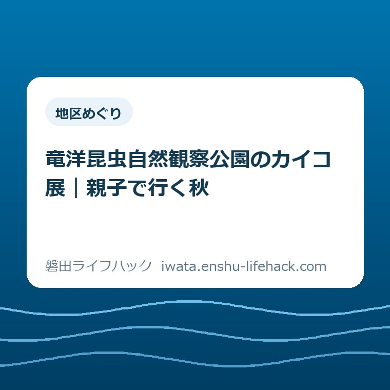

地区めぐり
竜洋昆虫自然観察公園のカイコ展｜親子で行く秋

この記事の要点
Q. カイコ展へ親子で行くなら、いつ・いくらで予定を組める？
A. 2026年9月5日～11月3日のカイコ展は入園料のみ、参加自由です。一般個人料金は大人330円、小中学生110円、幼児・70歳以上無料。9～17時、最終入園16時30分で、休館日を除きます。別企画の教室と分け、往復と滞在を含めて家族の訪問候補日を一つ選びましょう。
親子の外出は、玄関を出る前から始まっている
竜洋昆虫自然観察公園のカイコ展を見に行くにも、保護者には準備があります。着替えを詰め、食事の時間を考え、きょうだいの予定を合わせる。運転する人を決めるところまで、すでに家族が手間を払っています。「近くの公園だから気軽に」とだけでは済みません。
利用料金や必要な確認は、年齢、利用する企画、家族の条件によって変わります。本記事は2026年9月25日に確認した一般個人利用の案内です。私は大石浩之（磐田市／不動産業）。展示の紹介に加え、家計と送迎の段取りから秋の外出を考えます。
目的地は竜洋地区の大中瀬320-1です。カイコ展のために休日を丸一日空ける必要があるのか。それとも午前中の予定に収まるのか。答えは出発地と子どもの過ごし方で違います。展示を見る時間だけでなく、出発から帰宅までをひとまとまりにしておきます。
今日は全行程を決めなくて構いません。家族で「この日なら行けそう」という候補日を一つ選ぶ。それがこの記事の着地点です。予定を確定させる前に、費用と時間の見落としを減らします。
カイコ展は11月3日まで。まゆ教室とは別の企画
竜洋昆虫自然観察公園の公式イベント案内では、カイコ展は2026年9月5日から11月3日までです。時間は9時から17時、料金は入園料のみ。定員はなく、参加自由と案内されています。開催期間中でも休館日は除いて考えてください。
展示されるのは、カイコの品種、幼虫、まゆ、絹製品などです。虫の姿だけで終わらず、身の回りの素材までつながる構成です。何種類を何匹見られるか、訪問日にどんな状態の幼虫がいるかまでは、公式の短い紹介からはわかりません。
意外に間違えやすいのが、同じページにある「カイコのまゆ教室」です。2026年9月27日の教室は、まゆから糸を取る別企画です。9月25日の確認時点で募集締切と表示されています。カイコ展の参加自由という案内を、教室にも当てはめてはいけません。
公式イベントページの冒頭には予約に関する共通案内があります。それだけを見て判断せず、各企画の欄まで読む必要があります。展示を見る外出と、時間の決まった体験教室への参加では、出発時刻も準備も違います。
私なら子どもへの説明も「糸取りをしに行く」ではなく、「まゆや絹を見に行く」とします。展示案内で確認できることを約束するためです。触れる体験や持ち帰りは確認できていないので、予定に組み込みません。

入園料を家族の人数で計算する
磐田市の施設ガイドが示す一般個人の入園料は、大人330円、小・中学生110円です。幼児と70歳以上は無料。公園公式のご利用ガイドでも同額を確認しました。70歳以上の方は年齢がわかるものの提示が必要です。
カイコ展だけを見る場合、一般個人料金なら次の計算になります。大人は70歳未満の有料対象者として計算しています。割引、回数券、年間パスポートなどは使わない例です。交通費、食事代、別企画の参加費は含みません。
| 一緒に行く人 | 計算 | 合計 |
|---|---|---|
| 大人1人・幼児1人 | 330円＋0円 | 330円 |
| 大人1人・小学生1人 | 330円＋110円 | 440円 |
| 大人2人・小学生1人・幼児1人 | 330円×2＋110円 | 770円 |
| 大人2人・小中学生2人 | 330円×2＋110円×2 | 880円 |
たとえば770円の家族でも、外で昼食を取るなら支出は入園料では止まりません。私は、入園料と移動費、食事代を別々に考えます。展示を見て昼食前に帰る案と、食事を挟む案を混ぜると、安いと思った外出の予算が見えにくくなるからです。
公園公式のご利用ガイドには、館内で食事の販売はなく、お菓子やアイスなどの軽食のみとあります。園内での飲食は可能で、図書室は飲食・休憩スペースとして案内されています。現地で昼食を買えるつもりで出発しないようにします。
持参する食事や飲み物、当日の利用場所は家族に合わせて決めてください。食べる時間まで滞在に含めるなら、展示を見る時間と分けておくと予定が立ちます。食事場所を利用できることと、到着時に希望の席が空いていることも別です。
竜洋への移動は「誰が何往復するか」で見る
竜洋昆虫自然観察公園への移動時間は、磐田市内というだけでは決まりません。市の施設ガイドには駐車場があることと所在地が掲載されています。家族の出発地から入口までの経路を確認し、車を降りてから受付までの余裕も予定に含めます。
磐田市の地区ごとの距離感は、市役所と四つの支所から暮らしの距離を測る記事でも整理しました。竜洋に住む家庭と、市の北側から向かう家庭では同じ滞在60分でも一日の使い方が変わります。市内の施設だから近い、と一括りにはできません。
送る人も一緒に入園して帰るなら、車の移動は通常の往復です。一度自宅へ戻り、終了時に迎えに行くなら、同じ道を二往復する形になります。展示の間に家事を済ませる案は便利そうですが、運転時間も増えます。子どもと園内で過ごす保護者は別に確保する前提です。
たとえば片道30分と仮定すると、一往復は60分、二往復は120分です。これは公園までの実測値ではなく、送迎方法を比べる計算例です。迎えに戻る案を選ぶ前に、往復が増えても家族にとって助かるかを考えます。
車以外で向かう家族には、この記事でバスの便数や徒歩時間を断定できません。乗り継ぎ、停留所からの移動、帰りの便まで確認してから候補日を選びます。送迎を頼む場合も、行きだけ決めて帰りを保留にすると、頼まれる側が休日の予定を立てにくくなります。
夕方に帰る案なら、暗くなる前に帰宅する余裕も考えたいところです。出発前の車や自転車の確認は、磐田市の秋の交通安全運動2026の記事につなげて読めます。展示を長く見るために帰路を急ぐ予定は、私は勧めません。
60分と90分は、家族が決める仮の滞在予定
カイコ展の標準見学時間は、確認した公式案内には掲載されていません。本記事の60分・90分は、親子で予定を相談するための仮の時間枠です。「60分あれば全部見られる」という保証でも、公園の推奨時間でもありません。
滞在60分を仮に置くなら、受付やトイレに10分、展示を見る時間に30分、休憩と帰る準備に20分という分け方が考えられます。これは私の提案です。子どもがまゆの前で足を止めたら、次の予定を足すより、その時間を残す方を選びます。
滞在90分の案なら、同じ60分に30分の余白を加えます。園内を見るか、座って休むかは当日に決められます。時間を延ばした分だけ見学項目を増やす必要はありません。きょうだいの興味が分かれたときも、余白があれば一方を急かさずに済みます。
片道30分、滞在60分という仮定なら、自宅を9時30分に出て、10時に到着し、11時に出発、11時30分に帰宅する計算です。合計120分になります。道路状況や準備時間は別に見込みます。この例の到着時刻を、そのまま自宅からの所要時間に置き換えないでください。

公園公式のご利用ガイドによると、開園は9時から17時、最終入園は16時30分です。17時まで開いていることを、17時直前に入れるという意味で受け取らないでください。夕方に行く場合は、入園できる時刻と、家族が見たい時間の両方から逆算します。
虫を見るのが好きな子も、幼虫は苦手という子もいます。全員が同じ展示に同じ時間を使うとは限りません。短く切り上げる可能性まで含めて予定を組む方が、入園料を払ったから最後まで見なければ、という負担を減らせると私は考えます。
良い点は、展示と暮らしをつなげて選べること
カイコ展の良い点は、幼虫からまゆ、絹製品へと視点を移せるところだと私は考えます。虫に詳しくなくても、形や素材の違いから会話を始められます。説明をすべて理解させようとせず、気になった展示を一つ覚えて帰る見方ができます。
入園料のみで、展示自体に定員が設けられていない点も、家族の予定を考える材料になります。決められた教室開始時刻に合わせる企画とは違い、開園時間の範囲で訪問を考えられます。ただし、参加自由は混雑しないという意味ではありません。
公園公式のご利用ガイドには、授乳室の授乳用チェアとベビーベッド、おむつ交換台の案内があります。小さな子どもと外出するとき、展示の内容と同じくらい、途中で世話をできる設備があるかが気になります。必要な設備が公表されているのは助かります。
帰宅後に興味が残ったら、カイコや絹について本を探す方法もあります。紙と画面の使い分けは、磐田市の電子図書館と紙の本を比べた記事で扱いました。特定の本が借りられるとは限りませんが、現地で覚えた言葉が次に探す手がかりになります。
注文したい点は、予約と休館の案内を一度で読めること
親子向けの案内に私が注文したい点は、カイコ展と関連教室の違いを、初めて読む人にも一度でつかめる形にしてほしいことです。公式ページには個別の条件があります。だからこそ、共通の予約案内を読んだ段階で、展示まで申込みが必要と思い込ませない見せ方を望みます。
家族が知りたいのは、展示を見られる日、到着の締切、追加費用の有無です。学べる内容が充実していても、その手前で情報を何度も探し直すと準備の負担になります。私は展示の説明と利用条件を近くに置く案内が使いやすいと考えます。
休館日は、市の施設ガイドでは木曜、祝日の場合は翌日とされています。公園公式は木曜休園と祝日開園を案内しています。候補日が木曜や祝日前後なら、日付を伝えて開園を確認すると確実です。2026年の秋会期に出かける判断には、当日の案内を優先します。
市と公園の案内には、年末年始の休館期間や磐田インターチェンジからの所要時間に記載差もあります。本記事は秋の展示を対象とし、それらを一つの確定値にまとめません。道路の所要時間も、自宅からの経路確認で補う必要があります。
対案・結論――今日は訪問候補日を一つ選ぶ
カイコ展への親子外出は、2026年11月3日までの会期から、家族が無理なく動ける候補日を一つ選ぶところから始められます。展示を見る日と教室に参加する日を区別し、候補日の休館・臨時のお知らせを公式ページで確認します。
家族の予定表には「カイコ展・候補」と書き、その横に出発地、同行する人、帰宅したい時刻を添えると相談が進みます。行くかどうかの約束を増やすためではありません。運転する人と子どもに付き添う人が、同じ予定を見られるようにするためです。
候補日の相談で迷ったら、朝から長時間出かける案と、展示を中心に短く過ごす案を比べます。食事や別の施設まで加えるのは後で構いません。私は最初の外出に目的を詰め込むより、帰宅後の洗濯や夕食まで回る予定を選びます。
設備が必要な家族は、必要な条件だけ電話で確かめる方法があります。公園の電話番号は0538-66-9900です。市の施設ガイドには車いす対応の入口やトイレが掲載されていますが、家族が使う用具での通行や、当日の設備の利用状況までは断定できません。
磐田市の「AEDの設置状況 磐田市公共施設 竜洋地区」では、公園のAEDは事務所内にあると案内されています。使える時間は休館日を除く9時から17時です。設備の有無だけで園内のどこでもすぐ使えるとは考えず、受付時に事務所の場所を把握しておくと所在がわかります。
大石の視点――安く入れることと、楽に出かけられることは別だ
私は、親子の外出を入園料だけで「負担が軽い」と呼びたくありません。安く入れることと、楽に出かけられることは別だ。330円の入園料の後ろには、支度をする人、運転する人、帰宅後の家事を引き受ける人の時間があります。家計と段取りを一緒に見るのが、私の判断です。
不動産業の立場でも、暮らしの便利さを施設の数だけで測ることには慎重になります。家から行ける場所があっても、誰が連れて行けるのかで使える範囲は変わるからです。竜洋に昆虫を学べる場所がある良さを、家族が利用できる予定にまで落としたいと考えます。
私にも迷いがあります。虫に興味を持った子には、時間を気にせず見てほしい。一方で、付き添う人が疲れ切る予定では、次の外出が重くなる。どの家族にも60分が正解とは言えません。だから時間枠は仮に置き、当日の様子で短くする余地も残します。
この記事に訪問の実体験は含めていません。公表情報を読み、家族の段取りとしてどう使うかを述べた私の意見です。展示の魅力を大きく見せるより、帰り道まで無理なく組める候補日を一つ持つ。その小さな前進を、秋の外出の準備にしてほしいと思います。
よくある質問
カイコ展は予約が必要ですか。まゆ教室も参加できますか。
2026年9月25日に確認した公園公式案内では、カイコ展は参加自由・定員なしです。9月27日の「カイコのまゆ教室」は別企画で、募集締切と表示されています。展示の入園だけで糸取り体験に参加できるとは考えず、希望する企画の予約・料金欄を個別に確認してください。
大人2人、小学生1人、幼児1人の入園料はいくらですか。
大人2人が一般個人料金の対象なら、330円×2人＋小学生110円＋幼児0円で770円です。カイコ展は入園料のみと案内されています。交通費・食事代・別企画の参加費は含みません。年齢や割引などで条件が変わるため、該当する家族は公園公式の利用案内で確認してください。
何時まで入れますか。親子で何分くらい見ればよいですか。
公園公式では9時から17時まで、最終入園は16時30分です。休館日は除きます。標準見学時間は公式案内で確認できません。本記事の60分・90分は仮の滞在案です。子どもの興味と休憩、帰りの移動を含め、家族が帰宅したい時刻から余裕を持って予定を組んでください。
買い物と同じ場所で生き物や環境に触れる候補として、エコフェスいわた2026の親子での回り方も整理しました。10月4日にららぽーと磐田へ寄る予定なら、体験を一つ選ぶところから比べられます。
参考にした公式情報
- イベントスケジュール／竜洋昆虫自然観察公園（2026年9月25日確認）
- ご利用ガイド／竜洋昆虫自然観察公園（2026年9月25日確認）
- 施設ガイド 竜洋昆虫自然観察公園／磐田市（2024年6月13日更新）（2026年9月25日確認）
- AEDの設置状況 磐田市公共施設 竜洋地区／磐田市（2025年3月26日更新）（2026年9月25日確認）

最終確認日：2026-09-25 ／ 本記事は公表情報と執筆者の見解を分けて記載しています。制度・数値・公開状況は変更される場合があるため、個別の利用条件は施設へお問い合わせのうえ、最後は磐田市公式ページで最新情報をご確認ください。